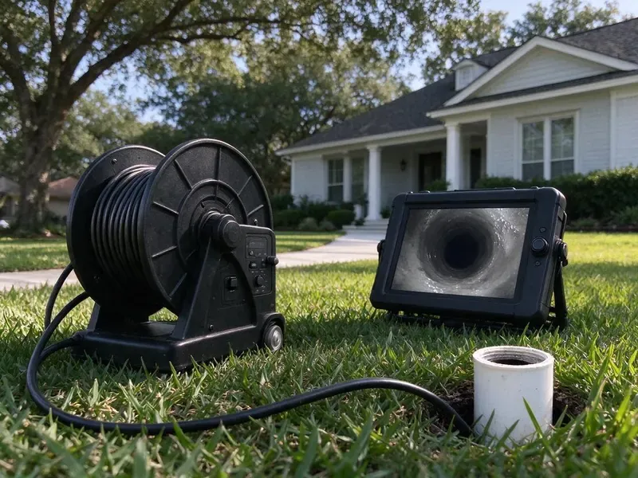

Sewer Line Cleaning in Barre, VT
Protect your home from backups with scheduled sewer line cleaning in Barre, VT, done by experienced local plumbers.
- Same-Day Sewer Line Service
- Guaranteed Work
- Advanced Equipment Used
- Licensed, Insured Plumbers
Keep Your Sewer Line Flowing and Avoid Expensive Backups in Barre, VT.
Don't let a clogged sewer disrupt your home. Contact CKV Plumbing today for professional service.
Expert Sewer Line Cleaning Services in Barre, VT
CKV Plumbing cleans the sewer lateral, the private pipe that runs from your home to the public sewer or septic tank. This line is typically your responsibility, and keeping it clean prevents most sewage backups.
Our expertise includes:
- Locator transmitters to mark line path and depth
- Diagnose and resolve recurring sewer backups.
- Maintenance scheduling for root-prone and grease-heavy lines

Additional Drain Services Services in Barre, VT
From stubborn kitchen clogs to main sewer backups, our drain services in Barre, VT clear the line and keep it clear with camera-verified results.


Customers
Why Choose CKV Plumbing for Sewer Line Cleaning in Barre, VT?
We give you the video and a written summary after every cleaning. That record helps you plan ahead and avoid surprise repairs.
- Clear Records, Every job includes notes on pipe type, depth and condition for your files.
- Licensed Plumbers, All our plumbers are fully licensed, insured, and well trained in current sewer line cleaning techniques.
- Local Expertise, We understand the plumbing challenges in Barre, including soil conditions and local building codes that apply to sewer lines.
Citywide Coverage
From downtown to the farthest suburbs, CKV Plumbing provides full sewer line cleaning throughout Barre. Our wide coverage means we can deliver timely and efficient solutions right to your doorstep, minimizing disruption to your routine.
Experienced Team
Each tech is trained to operate cameras and line locators, so they can tell you exactly where a problem is and how deep. That precision saves money if a repair is ever needed.
Safety-First Approach
We handle sewer debris with proper protective gear and clean the work area when we finish. Cleanouts are sealed securely to keep sewer gas out of your home.
Trusted Certified Barre Plumbing Services Professionals
At CKV Plumbing, we take pride in providing licensed, certified plumbing services throughout Barre, VT. Backed by leading industry credentials, our experienced plumbers combine technical skill with genuine customer care. Whether it is repair, installation, or maintenance, we follow strict safety and quality standards to deliver lasting results you can trust.
Call Us Now PHCC Plumbing Contractor Recognition
PHCC Plumbing Contractor Recognition Better Business Bureau (BBB) Accreditation
Better Business Bureau (BBB) Accreditation Angi Certified Pro
Angi Certified Pro ISO 9001 Quality Management Certification
ISO 9001 Quality Management CertificationReliable Sewer Line Cleaning Services in Barre, VT
Routine Sewer Line Cleaning in Barre
Routine cleaning clears the slow buildup of grease, paper and scale that narrows sewer laterals over time. We enter through a cleanout and run a sectional cable with the correct blade for your pipe size. For heavier buildup we follow with hydro jetting to scrub the walls. The goal is a line that flows at full capacity. Most homeowners with older pipe benefit from cleaning every one to two years.

Sewer Line Camera Inspection in Barre
A camera inspection shows the inside of your sewer line in real time. We look for bellies where water pools, offset joints, cracks, roots and corrosion. A locator in the camera head lets us mark the exact spot and depth on the surface. You get a copy of the video and our notes. This is useful for home buyers, sellers and anyone with recurring clogs.
Pre-Purchase Sewer Line Cleaning and Inspection in Barre, VT
Many home inspections do not include the sewer line, yet a failing lateral can cost thousands. We clean the line first so the camera can see the pipe walls clearly. Then we record the full length and give a written report. Buyers can use this to negotiate repairs or credits. Sellers can use it to show the line is in good shape.
Tree Root Removal from Sewer Lines in Barre
Shifting soil and mature trees can lead to serious problems, with tree roots seeking moisture and getting into sewer pipes, especially those with small cracks or loose joints. Rocky glacial soil and ledge are common across Vermont, which can make digging for water lines, sewer repairs or septic work slow and costly. In Barre, this is a common cause of recurring sewer backups. Our dedicated root cutting tools and hydro jetting remove these invasive roots, restoring the full diameter of your sewer line. We can also offer tips on preventing future root intrusion.
Commercial Sewer Line Cleaning in Barre, VT
Businesses in Barre, VT have different sewer line cleaning needs, often dealing with higher volumes of waste and commercial-grade blockages. Restaurants, for example, often contend with severe grease buildup. CKV Plumbing provides robust commercial sewer line cleaning designed to minimize downtime and keep your business running without interruption. We use powerful equipment to handle large-scale blockages and maintain your commercial plumbing reliably.
Sewer Line Cleaning Cost Compared to Replacement in Barre, VT
Cleaning a sewer line costs a few hundred dollars, while replacement can run into the thousands. If the pipe is structurally sound, regular cleaning is often the better value. If the camera shows a collapse or a long belly, cleaning only buys time. We show you the footage and both price options. You make the decision with complete information.
Sewer Line Odor Remediation in Barre, VT
Persistent foul odors coming from your drains or yard can be a clear sign of a sewer line problem in Barre, VT. These odors are often caused by trapped waste, blockages, or even a damaged sewer line allowing gases to escape. Our sewer line cleaning removes the sources of these odors, and our inspections can identify any breaches in the line. We restore fresh air and proper function to your property.

Sewer Camera Inspection in Barre, VT
Before any cleaning, CKV Plumbing often recommends a sewer camera inspection. This involves inserting a high-resolution waterproof camera into your sewer line, letting us see the exact condition of your pipes. We can spot cracks, breaks, corrosion, root intrusion, and the precise location and nature of any blockage in Barre, VT. This diagnostic step helps us choose the most suitable and cost-effective cleaning or repair method, avoiding unnecessary digging or guesswork.
Sewer Line Cleaning Near Me in Barre, VT
Our commitment to the Barre community means we are always close by to address your sewer line cleaning needs. Whether you have a minor clog or a major backup, you can count on CKV Plumbing for prompt, efficient, and dependable service right in your neighborhood. We are dedicated to keeping your plumbing system running smoothly.
When you search for sewer line cleaning near me in Barre, VT, you want a local company that understands your needs. CKV Plumbing is rooted in the community, providing reliable and prompt service to our neighbors. We take pride in quick response times and effective solutions, so your plumbing system is back in order without delay.
CKV Plumbing at a Glance
- Licensed and insured plumbers serving Barre, VT
- 24/7 emergency service with same-day scheduling
- Upfront, flat-rate pricing before work begins
- 4.8-star rated by 553+ Vermont customers
Barre Map
Barre Information
- Population
- 8,387
- Area codes
- Local
- Service area
- Barre and communities within 40 miles
- Nearby
- Montpelier, St. Johnsbury, Middlebury, Essex Junction
Many established neighborhoods in Barre, VT still rely on aging clay and cast iron sewer laterals, which makes regular cleaning one of the best ways to avoid backups.
Expert Services
Trust our professionals for reliable CKV Plumbing solutions in Barre, VT.
Our Specialized Plumbing Services in Barre, VT
At CKV Plumbing, we provide a complete range of plumbing services across Barre, VT. From leak detection to full system installations, our team ensures fast, precise, and affordable service for both residential and commercial properties. Explore our core services below:


How Our Sewer Line Cleaning Process Works in Barre, VT
At CKV Plumbing, our sewer line cleaning process is thorough and designed for maximum effectiveness. We keep every step transparent, keeping you in the loop from start to finish.
Request a Quote
Call (802) 209-5139 and tell us about any slow drains or backups. We give you a price range and schedule a time that suits you.
Clean the Lateral
We access the line through a cleanout and use cables or jetting to clear it. Roots, grease and debris are removed all the way to the street connection.
Camera and Report
We run a camera through the cleaned line and mark any problem spots. You get the video and our advice.
Frequently Asked Questions About Sewer Line Cleaning in Barre
Sewer line cleaning in Barre typically costs $200 to $500 with a cable machine, or $400 to $900 with hydro jetting. Adding a recorded camera inspection usually runs $150 to $350.
Rental machines can work on simple clogs, but they can kink or get stuck on roots. A pro also offers a camera to verify the line is clear.
For most homes in Barre, annual or twice-yearly sewer line cleaning is sufficient, especially if you have mature trees nearby or an older plumbing system. If you have frequent clogs or a high-usage commercial property, more frequent cleaning might be wise to prevent major backups.
We use professional equipment from trusted brands such as Spartan Tool, RIDGID, and Gorlitz for our sewer cameras, drain snakes, and hydro jetting machines. These brands are known for their reliability and effectiveness in tackling tough sewer line blockages.
Yes, CKV Plumbing stands behind our work. We offer a satisfaction guarantee on all our sewer line cleaning. Warranty details will be provided at the time of service, for your peace of mind.
During our diagnostic camera inspection, if we discover that your sewer line is broken, collapsed, or severely damaged, we will tell you immediately. In such cases, cleaning might only be a temporary fix, and we would discuss options for sewer line repair or replacement, laying out all available solutions and costs.
Common causes include tree root intrusion, buildup of grease and food particles, flushing non-biodegradable items like wet wipes or feminine hygiene products, and structural issues like cracked or collapsed pipes. Older homes frequently have clay pipes that are prone to root invasion.
Older homes often have clay or cast iron, and some have Orangeburg fiber pipe. Most homes built in recent decades have ABS or PVC. Renovations in Barre frequently mix original plumbing with newer copper or PEX, so a careful look at transitions and fittings is important.
What People Are Saying About Our Plumbing Experts?

Mark T.
When our office needed drain cleaning, CKV Plumbing provided quick, reliable service. The plumber arrived on time and made sure every drain flowed perfectly before leaving. Very satisfied.
Drain Cleaning · Montpelier, VT
Daniel K.
A pipe burst at 11 pm and they actually answered. The plumber showed up within the hour, shut everything down, and had us back to normal the next morning. Could not ask for more.
Emergency Plumbing · St. Johnsbury, VT
Patricia H.
We had a slab leak that two other companies could not find. CKV Plumbing located it in under an hour, explained our options, and the price matched the quote to the dollar.
Slab Leak Repair · Essex Junction, VT
Laura S.
I scheduled a water heater replacement, and the team made the process smooth and affordable. The new unit works perfectly, and they cleaned up after completing the job.
Water Heater Replacement · Montpelier, VTSofia M.
Two new toilets installed in one visit, no mess left behind, and the tech even adjusted a faucet he noticed was dripping. Fair pricing and really friendly.
Toilet Installation · Middlebury, VT
Emily R.
I called CKV Plumbing for plumbing repair, and the technician was fast, polite, and thorough. They explained the problem clearly and fixed it the same day. I will definitely hire them again. Highly recommended!
Plumbing Repair · Montpelier, VT